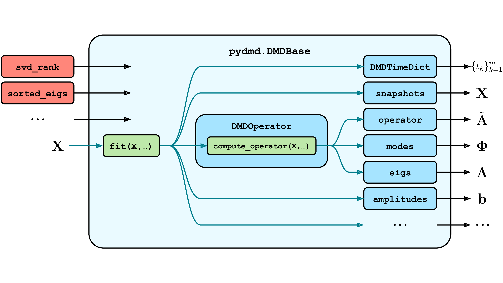
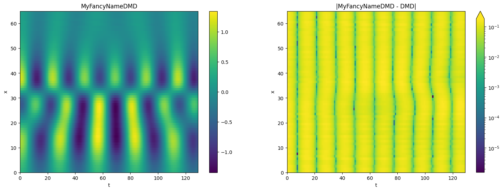

PyDMD#
Developers Tutorial 1: Extending PyDMD#
Contrary to other PyDMD tutorials, this notebook illustrates the general structure of the basic classes, aiming to help developers to extend the package functionality in a smooth way.
In this tutorial we will indeed create from scratch a new version of the original DMD; such extension will be totally useless from a scientific perspective, the only purpose is showing the suggested steps to implement new variants inside PyDMD.
The Back-end API#
The necessary bricks for building the new DMD version are:
`DMDBase<https://pydmd.github.io/PyDMD/dmdbase.html>`__, the actual backbone of all the different implemented versions;`DMDTimeDict<PyDMD/PyDMD>`__, the class that manages the time window;`DMDOperator<https://pydmd.github.io/PyDMD/dmdoperator.html>`__, the class that manages the so-called DMD operator;
The following schematic outlines the general structure of every DMDBase module.

In general, allPyDMD modules should be capable of the following tasks:
Accepting and storing DMD algorithm parameters.
Performing DMD given snapshot data \(\mathbf{X}\) via the
fitmethod, which often does the following:prepares and stores the input data,
sets the
DMDTimeDicts,computes the DMD operator and its eigendecomposition, and
(this is done by invoking the
DMDOperator’scompute_operatorfunction)
computes the DMD amplitudes using the computed operator.
Fetching and utilizing DMD results, such as:
the reduced DMD operator \(\tilde{\mathbf{A}}\)
the spatial modes \(\mathbf{\Phi}\) (the eigenvectors of \(\mathbf{A}\))
the temporal frequencies \(\mathbf{\Lambda}\) (the eigenvalues of \(\mathbf{A}\))
the spatiotemporal mode amplitudes \(\mathbf{b}\)
Hence different modules implement different DMD variants, where any number of these steps may be performed differently.
Building a New PyDMD Module#
We start the new module by importing all these classes and the usual math environment (matplotlib+numpy).
[1]:
%matplotlib inline
import matplotlib.pyplot as plt
import numpy as np
from pydmd import DMDBase, DMD
from pydmd.utils import compute_tlsq
from pydmd.snapshots import Snapshots
import matplotlib.colors as colors
We are now able to create a new class inheriting from DMDBase: in this way we just need to implement the new fit() method. We can also overload one or more attributes/methods, depending on the algorithm which we are going to follow.
In this case, we also overload the constructor (i.e. the __init__ method) to present a non-trivial case.
Our simple algorithm#
The new functionality we are going to implement is basically a simple DMD which maps the input snapshots using a custom function, provided by the user before of the construction of the operator.
Since the (quite) high number of parameters in the constructor, we suggest to pass explicitly all of them instead of using args and kwargs. It’s redundant, but also much more readable! We can call the DMDBase constructor thanks to super keyword (more info on super here).
[2]:
class MyFancyNameDMD(DMDBase):
"""
The MyFancyNameDMD class.
A dummy DMD variant which, useless outside this tutorial.
Make sure to write an exhaustive docstring if you want to
distribute your code, or use it again in some years.
"""
def __init__(self, func, **kwargs):
super().__init__(**kwargs)
self.__func = func
We just specify that the last line of constructor saves the passed function in the object, giving us the possibility to recall it later.
We are now ready to implement the fit method. Define the custom mapping as \(f: \mathbb R^n \to \mathbb R^n\) acting on the snapshots \(\{\mathbf x_i \in \mathbb R^n\}_{i=1}^m\). Then we just need to pre-process the snapshots in fit() and build the DMD operator.
[3]:
def fit(self, X):
"""
Compute the DMD to the input data.
:param X: the input snapshots.
:type X: numpy.ndarray or iterable
"""
# adjust the shape of the snapshots
input_snapshots = Snapshots(X).snapshots
# apply the mapping
mapped_snapshots = np.apply_along_axis(self.__func, 0, input_snapshots)
# store the snapshots
self._snapshots_holder = Snapshots(mapped_snapshots)
# build the matrices X and Y
n_samples = self.snapshots.shape[-1]
X = self.snapshots[:, :-1]
Y = self.snapshots[:, 1:]
X, Y = compute_tlsq(X, Y, self._tlsq_rank)
# compute the DMD operator
self._svd_modes, _, _ = self.operator.compute_operator(X, Y)
# Default timesteps
self._set_initial_time_dictionary({"t0": 0, "tend": n_samples - 1, "dt": 1})
# compute DMD amplitudes
self._b = self._compute_amplitudes()
return self
By recalling the already implemented methods, we just need few lines of code to complete the new version. Of course, in case of doubts, the documentation is the best starting point to better understand classes and methods.
We merge the two cells above in the next one in order to have the entire class implemented.
[4]:
class MyFancyNameDMD(DMDBase):
"""
The MyFancyNameDMD class.
A dummy DMD variant which, useless outside this tutorial.
Make sure to write an exhaustive docstring if you want to
distribute your code, or use it again in some years.
"""
def __init__(self, func, **kwargs):
super().__init__(**kwargs)
self.__func = func
def fit(self, X):
"""
Compute the DMD to the input data.
:param X: the input snapshots.
:type X: numpy.ndarray or iterable
"""
# adjust the shape of the snapshots
input_snapshots = Snapshots(X).snapshots
# apply the mapping
mapped_snapshots = np.apply_along_axis(self.__func, 0, input_snapshots)
# store the snapshots
self._snapshots_holder = Snapshots(mapped_snapshots)
# build the matrices X and Y
n_samples = self.snapshots.shape[-1]
X = self.snapshots[:, :-1]
Y = self.snapshots[:, 1:]
X, Y = compute_tlsq(X, Y, self._tlsq_rank)
# compute the DMD operator
self._svd_modes, _, _ = self.operator.compute_operator(X, Y)
# Default timesteps
self._set_initial_time_dictionary(
{"t0": 0, "tend": n_samples - 1, "dt": 1}
)
# compute DMD amplitudes
self._b = self._compute_amplitudes()
return self
And, we’re done!
Our new class is implemented, inheriting all the methods to the base class. We have nothing to do but try it on a simple example. First of all, we instantiate a new object, passing as function a simple normalizer.
[5]:
def myfunc(snapshot):
return snapshot + np.mean(snapshot) * np.random.rand(len(snapshot))
my_dmd = MyFancyNameDMD(func=myfunc)
We recycle the dataset from tutorial 1:
[6]:
def f1(x, t):
return 1.0 / np.cosh(x + 3) * np.exp(2.3j * t)
def f2(x, t):
return 2.0 / np.cosh(x) * np.tanh(x) * np.exp(2.8j * t)
x = np.linspace(-5, 5, 65)
t = np.linspace(0, 4 * np.pi, 129)
xgrid, tgrid = np.meshgrid(x, t)
X1 = f1(xgrid, tgrid)
X2 = f2(xgrid, tgrid)
X = X1 + X2
The fit method we have implemented is now called to perform our algorithm to the input data.
[7]:
my_dmd.fit(X.T)
/Users/francescoandreuzzi/code/sissa/pydmd/venv/lib/python3.9/site-packages/pydmd/snapshots.py:72: UserWarning: Input data condition number 2.381641522890837e+18. Consider preprocessing data, passing in augmented data
matrix, or regularization methods.
warnings.warn(
[7]:
<__main__.MyFancyNameDMD at 0x10a84cc40>
To check that everything works as expected we compare the results obtained with the new version with respect to the original standard approach. We import the DMD class and fit over the same data.
[8]:
dmd = DMD()
dmd.fit(X.T)
[8]:
<pydmd.dmd.DMD at 0x120390c40>
We have performed both the algorithms, we can now look at the reconstructed system using the reconstructed_data attribute. We note here that, as the other methods and attributes, reconstructed_data is inherited from DMDBase, giving us the possibility to call it without having implemented explicitly.
[9]:
plt.figure(figsize=(18, 6))
plt.subplot(1, 2, 1)
plt.pcolormesh(my_dmd.reconstructed_data.real)
plt.title("MyFancyNameDMD")
plt.xlabel("t")
plt.ylabel("x")
plt.colorbar()
plt.subplot(1, 2, 2)
Z = np.abs(my_dmd.reconstructed_data.real - dmd.reconstructed_data.real)
pcm = plt.pcolormesh(
Z,
norm=colors.LogNorm(vmin=max(1.0e-16, Z.min()), vmax=max(1.0e-15, Z.max())),
)
plt.title("|MyFancyNameDMD - DMD|")
plt.xlabel("t")
plt.ylabel("x")
plt.colorbar(pcm, extend="max")
plt.show()

Reconstruction looks fine! We are able to note that, since the normalization of the snapshots, the two approaches returns similar results, just a bit rescaled, that is what we expected by preprocessing in this way the input data.
But what about if we want to rescale back the reconstruction (or the modes) in the new version? Simple, we have just to overload the reconstructed_data or modes attributes.
This is the basic guide to implement a new version of DMD. For more complex changes to the algorithm, we recommend to carefully read the documentation of the package, and maybe reporting in the Github issues page the extension you are going to implement.